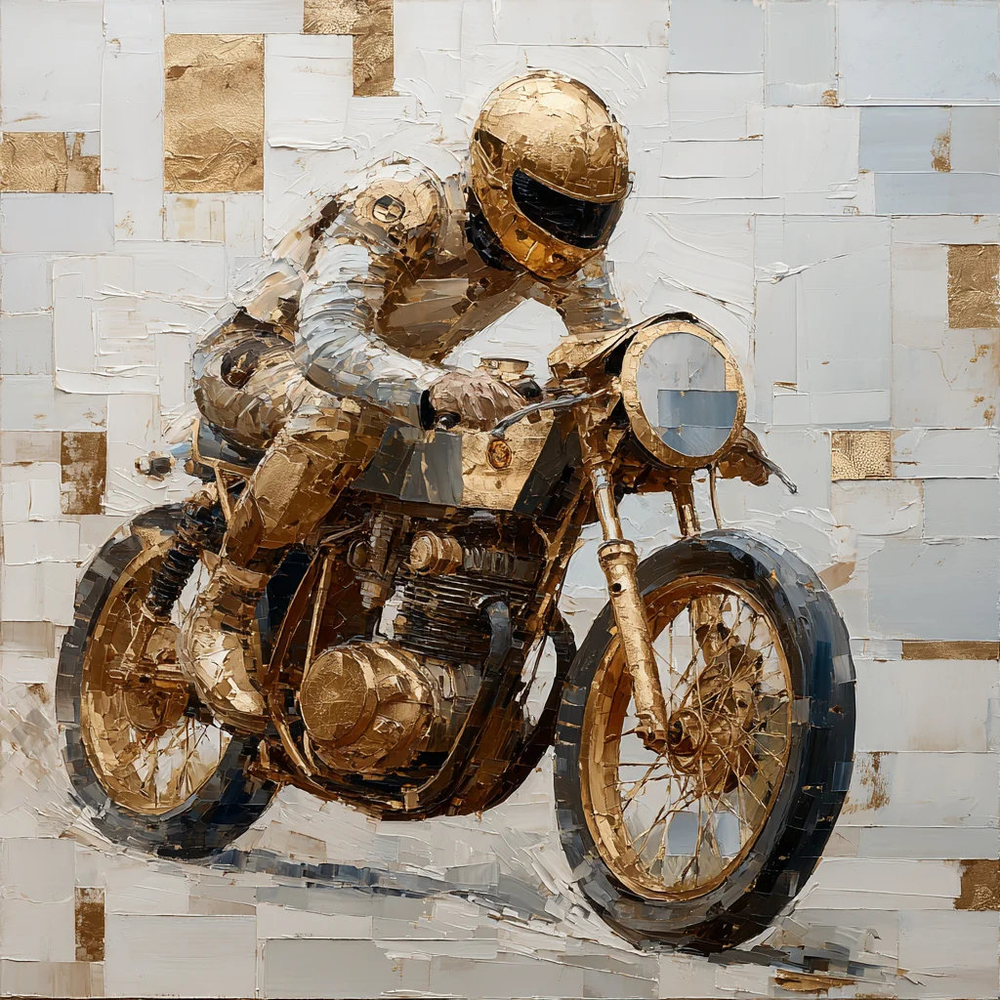
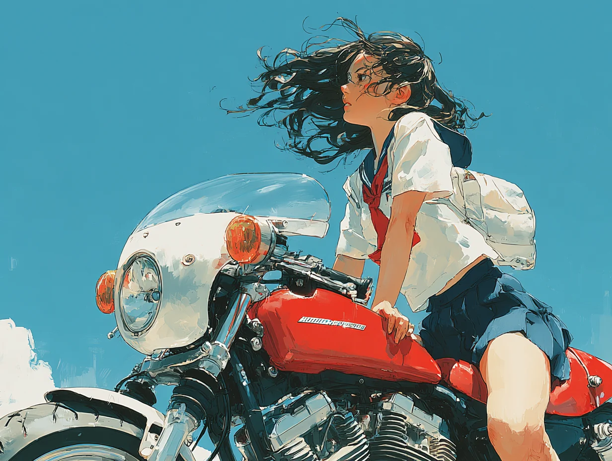
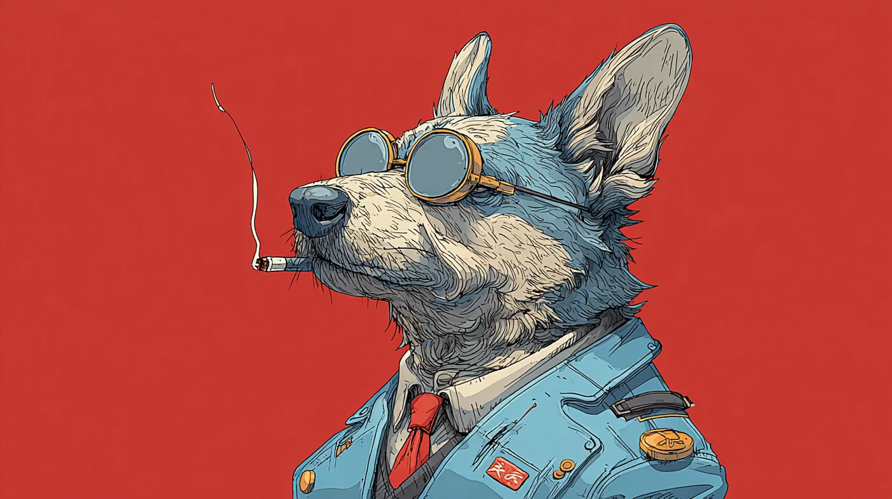

01VIEW COLLECTION ↗

BIKE COLLECTION
走る。どこまでも。
03VIEW COLLECTION ↗

GAKUSEI COLLECTION
あの頃も、これからも。
02VIEW COLLECTION ↗

ANIMAL DESIGN COLLECTION
どんなやつも、最高だ。
04
VIEW COLLECTION ↗
ARMY COLLECTION
肩の力を抜いて、前へ。
05 VIEW COLLECTION ↗
VIEW COLLECTION ↗
DOKURO COLLECTION
今日を、少しおもしろく。
URBAN RIDERTOKYO™
BRAND COLLECTION
好きなものと、どこまでも。
THE ORIGINALS.
URBAN RIDER TOKYO.
URBAN RIDER TOKYO.
着る。走る。
自分らしく、生きる。
東京という街のエネルギーと、自由を愛するライダーのスピリット。
バイクに乗る日も、街を歩く日も。
好きな一枚から、いつもと少し違う一日へ。